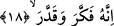

yapısında bir “kuşatma, kaplama, baskın gelme” anlamı vardır.
Yine âyette yer alan “saûd” zor tümsek, dik ve sarp yokuş demektir. Bu ifâde istiâre
yoluyla her türlü meşakkat ve zorluğun aşılması için kullanılmaktadır. Bâzı tefsir
bilginlerine göre “saûd” “feûl” ölçüsünde fakat “fâil” anlamındadır. Bu takdirde durum
mahalle hâlin ismi verilmesi kabilinden olmuş. Yokuşa meşakkat ismi verilmiş ya da
“saûd” “mef’ûl” mânâsınadır. Bu takdirde kelime -mecazen değil de- gerçek anlamında
kullanılmış olur. Buna göre âyetin mânâsı: Ben onu umduğu fazlalığa karşılık istemese
de zorlu dik bir yokuşu çıkmakla yükümlü tutacağım demek olur. Öylesine zor olacak ki
kendisini her yönden şiddetli bir meşakkat sarıp bürüyecek. “İrhak” herhangi bir
kimseye büyük bir meşakkatli işi görmesi yükümlülüğünü yüklemek demektir. Öylesine
ki o kimseyi her yönden meşakkat ve şiddet sarıp bürüyüverir.
İmam Gazali der ki: “Kişinin yükümlü tutulacağı sarp yokuş öyle bir hâldir ki insan
onu yapmaya koyulduğunda -sonunda ölmese bile- canı çıkacak gibi olur.” Bu ifâde
kişinin dayanılamayacak derecede zor bir azapla yüzyüze geleceğinin temsilî bir
anlatımından ibârettir.
Yukarıdaki “sarp bir yokuşa sürülme” ifâdesini mecâzî olarak almak mümkün
olduğu gibi gerçek anlamına yorumlamak da mümkündür. Nitekim Peygamber (s.a.)
Efendimiz bir hadis-i şeriflerinde şöyle buyururlar: “Saûd” cehennemde ateşten bir
dağdır. Azap çeken kişi o dağa yetmiş senede çıkar. Sonra tekrar aşağıya yuvarlanır
ve ebediyete kadar böylece azap görür” [185]
Yâni onun tepesine gidilemez. Onu ateşten zincirlerle çekerler. Önden çeker, arkadan
ateşten gürzlerle vururlar ve bu böyle devam eder. Bu sûretle yetmiş senede tepeye
ulaşır, sonra yeniden bu şekilde aşağı düşer ve başa geri döner.
Hadisteki “harif” kelimesi senenin sonu demektir. Bu mevsimde meyveler olgunlaşıp
devşirildiği için senenin sonuna da harîf denilir. Bütün yıl demektir. Nitekim “sûrî illet/
şeklî sebeb, tam illettir; yâni tam sebebtir” denilmesi de böyledir.
Bu nedenle Kâmus’ta denir ki: “Harif yaz ile kış arasındaki üç aydır. Bu ay içinde
meyveler toplanır. Peygamber Efendimiz’den gelen bir başka hadis-i şerifte şöyle
buyurulur: “Kişi cehennemde o yokuşu çıkmakla yükümlü tutulur ve oraya elini her
koyduğunda eli erir. Oradan kaldırdığında ise tekrar eski hâlini alır. Ayağını
bastığında ayağı erir, kaldırdığında ayak eski hâlini alır.” [186]
18. Zira o, düşündü taşındı, ölçtü biçti.
Bu ifâde yukarıdaki tehdidin sebebini açıklamakta ve o kişinin neden bu azâbı hak
ettiğini beyân etmektedir. Bu beyâna göre onun azâbı hak ediş sebebi, Kur’an-ı Kerim
hakkında ne söyleyeceğini ölçüp, biçip üzerinde düşünmesidir.